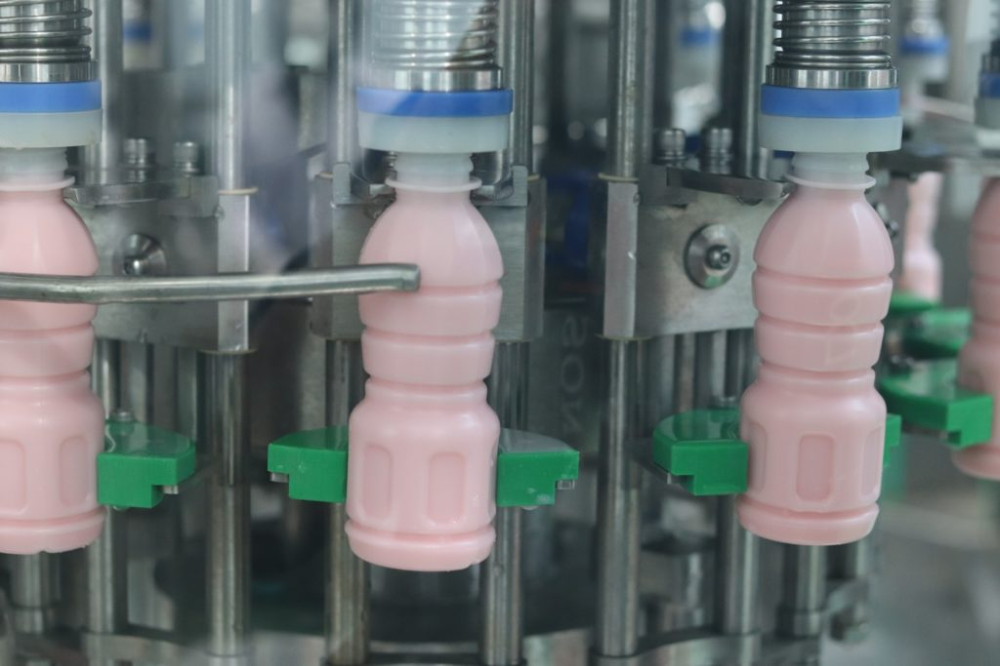

Pembelajaran terapan
Mahasiswa memahami alur kerja pengolahan susu melalui praktik yang terstruktur.
Mengenal ruang pembelajaran, produksi, dan inovasi susu di Politeknik Negeri Jember.
PENDIDIKAN BERBASIS PRODUKSI
Teaching Factory Unit Produksi Susu (TEFA UHT) Politeknik Negeri Jember menghadirkan lingkungan belajar yang menghubungkan teori di kelas dengan praktik pengolahan pangan. Kegiatan berfokus pada pemahaman proses, ketelitian kerja, dan tanggung jawab terhadap mutu.
Di sini, mahasiswa belajar mengenali bahan baku, mengikuti tahapan produksi, serta mengevaluasi hasil olahan susu. Pendampingan kegiatan membantu membangun kebiasaan kerja yang higienis, disiplin, dan kolaboratif.

Mahasiswa memahami alur kerja pengolahan susu melalui praktik yang terstruktur.
Eksplorasi formulasi dan proses menjadi ruang belajar untuk ide-ide baru.
Diskusi kebutuhan mitra membuka peluang penelitian dan kerja sama yang relevan.
Untuk rencana kunjungan, kebutuhan fasilitas, atau informasi kelembagaan, silakan sampaikan kebutuhan Anda.